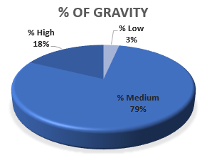
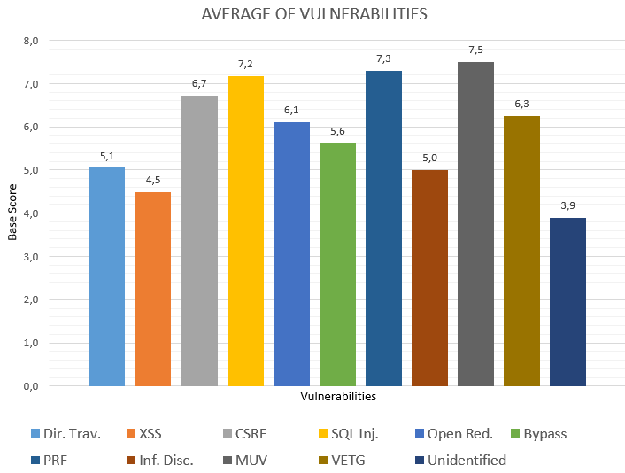
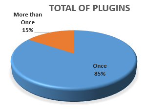
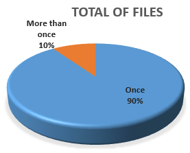

1. Types of Vulnerabilities
Vulnerability, [1], is a weakness which allows an attacker to reduce a system's information assurance. Vulnerability is the intersection of three elements: a system susceptibility or flaw, attacker access to the flaw, and attacker capability to exploit the flaw [2]). We present the Types of Vulnerabilities following:
XSS (Cross-site Scripting): the attacker manages to hide malicious code from users, making it look like application components, and wait for user activation to execute SQL Injection: the attacker takes advantage of the lack of data validation and execute SQL queries from the components client's writing Directory traversal: witd the existence of a correct code takes advantage of the lack of security (or validation) in the permissions of the roles of users CSRF (Cross-site Request Forgery): the attackers abuses the trust of website on the users and use the permissions of them for the attack Bypass: the attacker takes advantage of alternate access patd by the developers or flaws in the design of the website Parameter Remote File (PRF): occurs when the website allows the execute written codes in uploaded files, or stored in shared paths witd website Open redirect: it allows the attackers to redirect users to arbitrary websites while execute phishing attacks Video Embed & Thumbnail Generator (VETG): it allows the attackers to execute arbitrary commands through unspecified vectors Information Disclosure (Inf. Disc.): it allows attackers to obtain configuration information through a direct request to the configuration file Multiple Unspecified Vulnerabilities (MUV): these are vulnerabilities of multiple and unspecified impact
The types of vulnerabilities were identified by the description that each one presents in theNational Vulnerability Database (NVD) repository, the text is necessary for the description of the vulnerability and your registration in the repository. The most comprehensive descriptions mention the type of vulnerability, the plug-in where the vulnerability is located and even the files in which it was necessary to perform some operation to correct the vulnerability. In all the descriptions they identify the plug-ins where the vulnerability is presented, it is necesary data for our study and in which we will cover later. The poorer descriptions are limited to naming the plug-in, which is why we need to identify the vulnerability by the interpretation the text and parallel research in the bibliography related to the terms.
2. Most frequent Vulnerabilities caused by plug-ins in WordPress
After make a study by the vulnerabilities registered; we identify, group and account the vulnerabilities by type. We counted and studied 139 vulnerabilities, which we identified and defined briefly in the previous section. Untill the date, the most commonly reported vulnerabilities are of type XSS. Were registred 76 vulnerabilities, it is represented more than 50% of registered vulnerabilities. The second most frequent vulnerability is the SQL Injection, a total of 24 representing just over 15%. The rest of types of vulnerabilities have a lower frequency of occurrence, does not reach 10% of occurrence but this does not detract from either importance or relevance because these characteristics depend on the severity of their impact and not on their frequency of occurrence.
Figure 1 |
Table 1 |
The Figure 1 and the Table 1 showed the frequency of occurrence for each vulnerability.
3. Gravity of Vulnerabilities caused by plugins in WordPress
After identifying the different types of vulnerabilities registered in the NVD repository, we decided to find which one has the greatest impact on the integrity of the application by add of the plug-in. For the registry of each vulnerability in the NVD repository, the fields shown in Table 2 are completed. These fields were used as metrics for vulnerability assessment:
Field CVSS 3.0 CVSS 2.0 Base Score Impact Score Exploitability Score Attack Vector (AV) Attack Complexity (AC) Privileges Required (PR) User Interaction (UI) Scope (S) Authentication (Au) Confidentiality (C) Integrity (I) Availability (A)
Table 2
The repository shows CVSS severity versions 2.0 and 3.0 vulnerability assessments. All the vulnerabilities present the evaluations by the metrics of the Version 2.0, and all those that were registered from the year 2017 are evaluated in addition by the Version 3.0. In many cases the quantitative results shown by the metrics show slight variations and in other cases the differences are greater. While qualitative assessments are different in many occasions. We understand that these variations are a result of the optimization in the applied metrics, the addition of new metrics or the division of some metrics in the version change.
As expected, we found a great variety in the Base Score field, some as low as CVE-2013-4954 and CVE-2012-6527 that were evaluated by Low witd a value of 2.6, botd vulnerabilities are type XSS. We found the vulnerability CVE-2012-3576 that has the maximum Base Score of 10.0 and was evaluated from High and is PRF type. Most of the vulnerabilities were evaluated from Medium (Table 3 and Figure 2)
Vulnerabilities 139 Low 5 Medium 108 High 26 Table 3
 Figure 2
Table 3 and Figure 2. The Figure 2 shows the percentages of the vulnerabilities grouped by the evaluation of the Base Score field, while Table 3 shows the amounts.
Until this moment we appreciate that not being to find a vulnerability of little occurrence this must be ignored. The Figure 3 shows how the MUV vulnerability has a single occurrence in the research carried out but was evaluated high, so that it has a high Score average, until this time the highest average.
Of the ten (10) types of vulnerabilities identified, three (3) of them have a high average impact on application integrity, caused by the addition of a plug-in. MUV, PRF, and SQL Injection vulnerabilities maintain a Score average of 7.0 or higher; this leads to a wake-up call for developers to take care of the appearance of these vulnerabilities in their applications.
For to calculate the average of the Score of the types of vulnerabilities, when we found the Score of CVSS 3.0 we despise the Score obtained of CVSS 2.0.
We must emphasize that the type of vulnerability XSS, which has the highest frequency of occurrence, and is the lowest vulnerability. Its Score values are very stable and are evaluated from Medium, and on a few occasions from Low. The problem of vulnerabilities of type XSS is that they are very frequent, reason for they are the most looked for to realize the attacks. Its high frequency of appearance leads to constant care by the developers Figure 3.

To take a deeper approach to our study we decided to use the metrics related to our objective as indicated by the names and descriptions of each one. We had and in our favor consideration that may have been optimized during the change of version from CVSS 2.0 to CVSS 3.0, but were not restructured.
Integrity (I) Availability (A) Confidentiality (C)
Of the 139 vulnerability descriptions analyzed, we observed that in only 14 was evaluate as None, they are not significant compromise of the integrity of the web application. While in 9 the affectation was classified as Low. For the most part the developers reported the possibility of unrestricted access to some files or certain information of the web application, but in these cases the scope of what the attackers was assessed limited. Finally, we observed in 4 of the vulnerabilities severely compromised (High) the application while another 1 Completely compromised the integrity of the application.
Analyzing the impact of the vulnerabilities in the availability of web applications, we observed that in only 3 of the 139, that the developers considered the possibility of a compromise in the performance or High interruption in the available resources. Again we have 1 that compromises the resources of the application in its entirety. Of the remaining only 40 have a Partial risk of the resources of the applications, the rest does not presents risks.
We analyze the field describing the complexity of the attack that must be performed to exploit the identified vulnerabilities without taking into account the attacker's experience. In this metric we noticed that in 1 of the vulnerabilities the complexity of the attack to be carried out is very low (None) and another 61 were evaluated from Low. We find 2 vulnerabilities that need a High level of knowledge of the atancante, while the rest were evaluated Medium.
Vulnerability Base Score Integrity (I) Availability (A) Confidentiality (C) CVE-2015-4697 8.8 High High Low CVE-2017-8099 8.1 High High None CVE-2017-5611 9.8 High High Low CVE-2017-6816 4.9 High None Low CVE-2012-3576 10.0 Complete Complete Low CVE-2013-4954 2.6 Partial None High CVE-2012-6527 2.6 Partial None High
Table 4
The Table 4 compiles the most significant data, mentioned above, to facilitate the understanding of the partial conclusions. The fields Integrity and Availability are correlated. It is easy to see that the evaluations of the fields Integrity and Availability are directly proportional to the field Base Score, while the field Confidentiality is inversely proportional. As the level of amemaza of the integrity of the application increases, the lack of security in the access to the resources that guarantee the operation of the application increases. The increase of these fields degrades the confidentiality of the application. In the rest of the vulnerabilities these fields present the same relation and behavior. Up to this point we can conclude that the fields Integrity, Availability and Confidentiality have direct influence in the field Base Score.
4. Qual é o sentimento da comunidade de desenvolvedores do Wordpress em relação às vulnerabilidades introduzidas por plug-ins?
In order to better understand how code the relationship between code anomalies and architectural problems, Tables 2 and 3 represents, respectively: (i) single instances - number of code anomalies only related witd a problem; and (ii) agglomerations - number of architectural problems related witd agglomerations. The results are represented, respectively, for the Healtd Watcher and Mobile Media systems.
5. Effort needed to correct vulnerability caused by wordpress plug-ins
In another of the metrics we have an idea of the effort that the developers must make to solve a vulnerability caused by the addition of a plug-ins. To solve the 139 vulnerabilities studied it was necessary to work witd a total of 7626 as reflected in Table 5. The Table 5 shows the total number of files that needed to be Added, Deleted or Edited to resolve the vulnerability. The column Used is associated only to the Edited column, since in the cases of the modified files the repository shows the modifications that were made. As you can see in the column Used only those files related directly to the vulnerability correction were counted.
As our study is aimed at the vulnerabilities produced by the addition of WordPress plug-ins, in a file containing PHP codes, we independently count the files with PHP, JS and HTML extension that were used in the correction process. During the process of counting and filtering of the files by extension we group all the possible files of extensions JS and JSP in a group of files JS; and the HTA, HTM, HTML, XML, MHT and MHTML extension files are grouped into the HTML group. All percent data shown in Table 5 were calculated using as one hundred percent, the total of All Files.
| Added | Deleted | Edited | Used | Total | |
| All Files | 6630 | 37 | 750 | 289 | 7706 |
| % Files | 86,03 % | 0,48 % | 9,73 % | 3,75 % | --- |
| Files PHP / JS / HTML | 2103 | 13 | 584 | 287 | 2987 |
| % Files PHP / JS / HTML | 27,29 % | 0,16 % | 7,57 % | 3,72 % | 38,76 % |
As a conclusion we summarize that to solve a vulnerability we need to add 47 files, modify another 5, and delete 1 file for every 208 files; all are approximate values. In the case of the modified we could say that approximately 2 files would be used per vulnerability. If we make the same reflection but only attending to the extensions that concern us for our investigation, only those files witd PHP, JS and HTML extensions, reduce slightly the amounts of files that we would have to use. In this case 15 files would be added, 1 file would be modified for every 13 that the application contains and 1 file would be deleted for every 592 files. Only 1 out of 26 files would be used.
We could say that the effort to correct the vulnerability is not much if we consider that the developer who makes the correction is that gave rise to the application, which favors the recognition of the causes and origin of the vulnerability. On the other hand if the developer who makes the correction did not participate in its creation, although it has a lot of knowledge that has the language and WordPress has to make a greater effort and interact witd many files.
6. Data Collection
Knowing that for WordPress there are more than 50 thousand plug-ins available and is widely used by the developer community, we set ourselves the task of identifying those plug-ins related to the registered vulnerabilities. For this process we once again covered the description of each vulnerability to indetify the plug-ins. We identified a total of 110 different plug-ins, which does not represent 1% of the total number of plug-ins known for WordPress.
The low percentage of plug-ins related to the vulnerabilities registered in the NVD repository led to the search for more details and found that 17 of them were found on more than one occasion representing almost 15,45 % of the total number of identified plug-ins. The other 93 plug-ins were only listed on one occasion witd one of the vulnerabilities (Figure 4).

We use the website WordPress.org to investigate the characteristics of the identified plug-ings. The referenced website offers various details about each plug-in. It offers details like: a description of the functionalities of each plug-in, the evaluations of all those users and developers evaluated them, installation instructions and version registration. The Figure 5 shows that over 50% of the identified plug-ins were evaluated witd 4 stars or more.
The Figure 6 gives importance to our study taking into account that the 110 plug-ins found in the 139 different vulnerabilities were evaluated by 16,254 WordPress developers. More than 95% gave evaluations of four (4) or more stars to the detected plug-ins. On average each plug-in was evaluated by approximately 147 users.
Doing a study similar to the one of the plug-ins but this time with the files we could observe that in several occasions, some of the files are modified or revised in more than one opportunity. This time we decided to only count those files that were modified to solve the vulnerabilities identified, we are talking about the files that were made possible in the column Used of Table 5. Of the total of 186 files that intervened in the solution of the vulnerability we have to 10% of the files were repeated on more than one occasion (Figure 7).

From the information offered by the previous figure and the study we can generate the following possible conclusions or new questions.
First: the first time the file was modified, the proposed solution did not correctly resolve the vulnerability and triggered other patches and fixes. Second: Modifying a vulnerability could have caused the existence of another vulnerability, in the same or another plug-in. Third: During the process of fixing a vulnerability, developers can add or modify files that are not related to the vulnerability to be solved. This process can generate new vulnerabilities or prevent the proposed solution from being efficient.
These variants for future work show that much remains to be explored in the world of vulnerabilities and even more to make the developers aware of the importance of watching for the occurrences of vulnerabilities in the applications that are generated to facilitate our day to day.
7. Difficulties Encountered
During the study realized in the NVD repository we find several difficulties that hinder our study, difficulties caused by the lack of data and we will describe in this section.
At first we find 2 vulnerabilities that do not present classification of the group of vulnerabilities to which they belong, and nor do they offer indications for the search, interpretation or identification of the same. We searched in Internet used the identifier of each vulnerability, trying to identify other repositories that will facilitate the process, but all the repositories found report the same information and in some cases less information. The vulnerabilities in this case are:
CVE-2013-2204 CVE-2012-4422
Other difficulties encountered were those vulnerabilities that do not make references to the plugins that were originated. Some of them offer several data but if any indicates the files that have to be modified, it must be very common files between the various plugins or own of WordPres and not of the plugins. In this case we find the vulnerabilities:
CVE-2016-6896 CVE-2012-4422 CVE-2012-2402 CVE-2006-5705
We find a larger group of vulnerabilities that do not provide data about how they should be corrected, what correction to make or patch to use. Whenever we did an internet search for a possible solution for these vulnerabilities we ended up circling between a different links that were showed in the pages found Table 6.
| Vulnerability | Gravity | Last Update | Type | Plug-in |
| CVE-2016-6896 | High | 02/Sept/2017 | Dir. Trav. | --- |
| CVE-2009-2334 | Medium | 18/Sept/2017 | XSS | +5 |
| CVE-2013-7240 | Medium | 25/Feb/2014 | Dir. Trav. | Advanced Dewplayer |
| CVE-2008-4625 | High | 28/Sept/2017 | SQL Injection | Newsletter |
| CVE-2008-0618 | Medium | 05/Sept/2017 | XSS | +2 |
| CVE-2008-0617 | Medium | 28/Sept/2017 | XSS | --- |
| CVE-2008-0616 | Medium | 28/Sept/2017 | SQL Injection | --- |
| CVE-2008-0615 | Medium | 28/Sept/2017 | Dir. Trav. | --- |
| CVE-2008-0491 | High | 28/Sept/2017 | SQL Injection | FooGallery |
| CVE-2008-0198 | Medium | 05/Sept/2017 | CSRF | --- |
As a curiosity we observed that the 7 vulnerabilities caused by the use of the plugins that were registered in 2008 are in this group of vulnerabilities that do not show solution; the 5 of these vulnerabilities shows updated information during the last month of September 2017, which indicates that the community is working on the solution of these vulnerabilities. The 5 of them have Medium severity level and the other 2 level of
In the Table 6 we show that the vulnerability CVE-2009-2334 is shown when combining the plugins Collapsing Archives, Akismet, Related Ways to Take Action, Acunetix Secure WordPress and Acunetix WP Security. On the other hand all the variables indicate that the vulnerability CVE-2008-0618 can be produced by any of the plugins Gwolle Guestbook or Rizzi Guestbook.
We detected 2 vulnerabilities produced not by the use of a plugin but by the elimination of some of them. In these cases, the vulnerabilities also offer no indication of which plugin can cause these disasters to be eliminated. The vulnerability CVE-2010-5295 was only necessary to modify 1 file but in the vulnerability CVE-2017-6816 was necessary to modify 49 files to correct the vulnerability caused by deleting the plugin or plugins
8. Full Paper
The excel file has all information used for this website and paper submitted to the 12td International Workshop on Variability Modelling of Software-Intensive Systems (VAMOS'18) can be visited here.
The full paper submitted to the 12td International Workshop on Variability Modelling of Software-Intensive Systems (VAMOS'18) can be downloaded here.
Further readings about the paper accepted at the International V Workshop on Software Visualization, Evolution and Maintenance (VEM'17) can be found here.
References
- U.S. Air Force Software Protection Initiative The Three Tenets of Cyber Security.Retrieved 2009-12-15.
- M. Marinescu. Detecting Design Flaws via Metrics in Object-Oriented Systems.TOOLS, Vol. 39, pp.173-182, 2001.
- W. Oizumi, A. Garcia, L. da Silva Sousa, B. Cafeo, and Y. Zhao. Code anomalies flock together: Exploring code anomaly agglomerations for locating design problems. in Proceedings of ICSE'16, May, 2016 (To appear).
- E. Guimaraes, A. Garcia, and Y. Cai. Exploring blueprints on the prioritization of architecturally relevant code anomalies. in Proceedings of COMPSAC'14, 2014.
- S. Vidal, C. Marcos, and J. A. Diaz Pace. An approach to prioritize code smells for refactoring. Automated Software Engineering, pp. 1-32, 2014
- T. J. Young. Using aspectj to build a software product line for mobile devices. Ph.D. dissertation, The University of British Columbia, 2005.
- S. Soares, E. Laureano, and P. Borba. Implementing distribution and persistence aspects witd Aspectj. in ACM Sigplan Notices, 2002.
- E. Guimaraes, A. Garcia and Y, Cai. Architecture-Sensitive Heuristics for Prioritizing Critical Code Anomalies. In proceedings of MODULARITY'15, Fort Collins, Colorado, 2015.